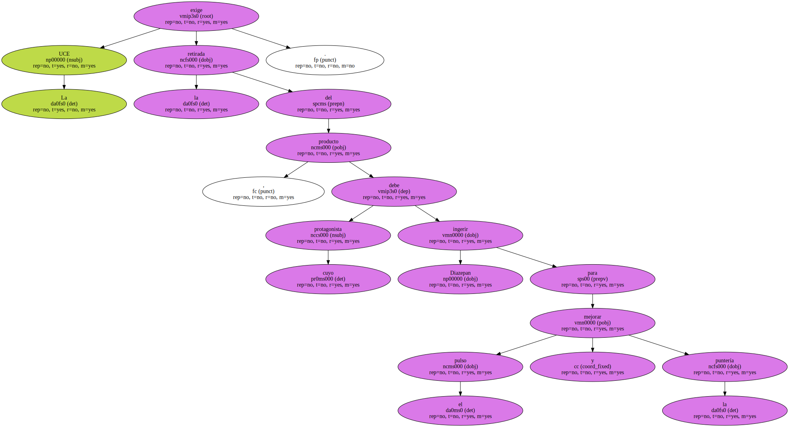
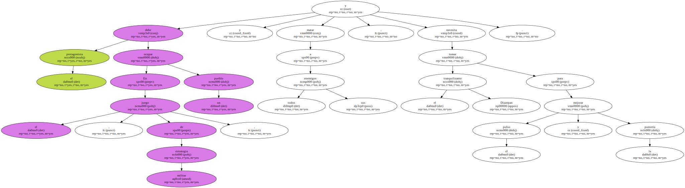
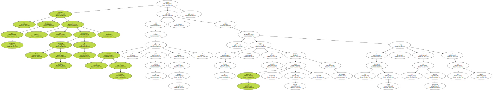
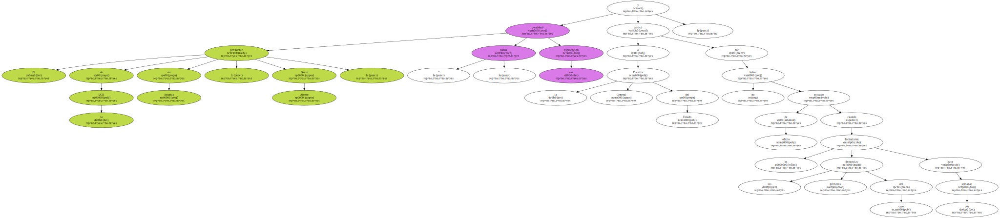
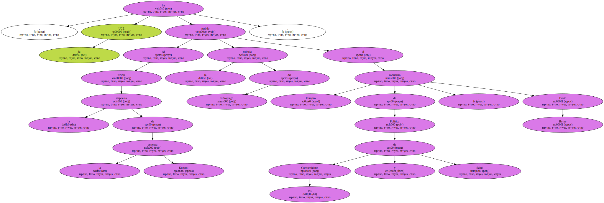
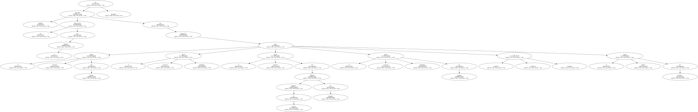
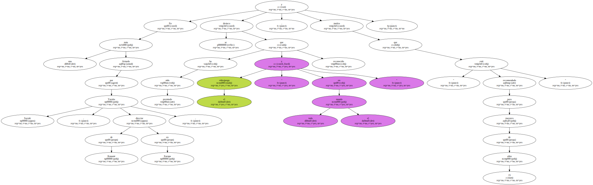
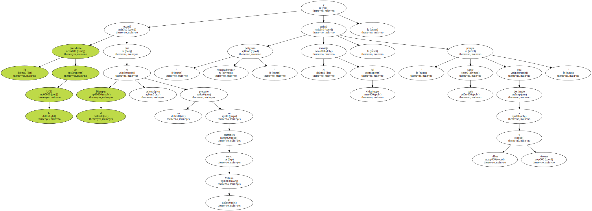
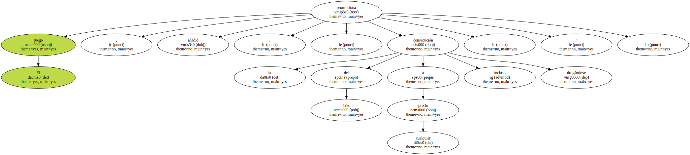

La UCE exige la retirada del producto , cuyo protagonista debe ingerir Diazepan para mejorar el pulso y la puntería.
La Unión de Consumidores de España ( UCE ) en Asturias ha iniciado acciones legales y ha exigido a la Administración y a la Unión Europea la retirada del mercado del videojuego Metal Gear Solid , de la empresa japonesa Konami , por considerar que " incita al consumo de drogas ".

En el juego , de estrategia militar , el protagonista debe ocupar un pueblo y matar a todos sus enemigos , y necesita tomar el tranquilizante Diazepan para mejorar el pulso y la puntería.
La empresa productora del videojuego , que ha distribuido cinco millones de unidades en Europa , replicó que el consumo de Diazepan " es para el muñeco y no para el usuario " , y que la denuncia " carece de sentido ya que de esa forma también habría que demandar a los fabricantes de coches , a los de bebidas alcohólicas y a los de tabaco porque son peligrosos ".
El presidente de la UCE en Asturias , Dacio Alonso , consideró " burda " esa explicación y criticó a la Fiscalía General del Estado por no haber actuado de oficio cuando se formularon las primeras denuncias del caso hace dos semanas.
Al recibir la respuesta de la empresa Konami , la UCE ha pedido la retirada del videojuego al comisario Europeo de Política de los Consumidores y Salud , David Byrne.
También ha requerido la intervención de la Justicia con denuncias ante el Fiscal General del Estado , el fiscal especial antidrogas , el fiscal general del Tribunal Superior de Justicia de Asturias , el fiscal especial antidrogas de Asturias y el fiscal tutelar de menores.
En una nota firmada por Yuraka Suzuki , director de Konami en Europa , se destaca que el videojuego " ha sido premiado y reconocido en todo el mundo " , y matiza que " está recomendado para mayores de 15 años ".
El presidente de la UCE recordó que el Diazepan es un psicotrópico presente en calmantes como el Valium y estimó " extremadamente peligroso " el mensaje del videojuego , " sobre todo porque está destinado a niños y jóvenes ".
El juego , añadió , promociona " la consecución del éxito a cualquier precio , incluso drogándose ".
